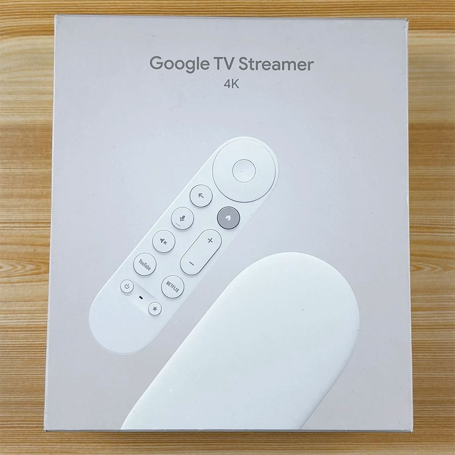
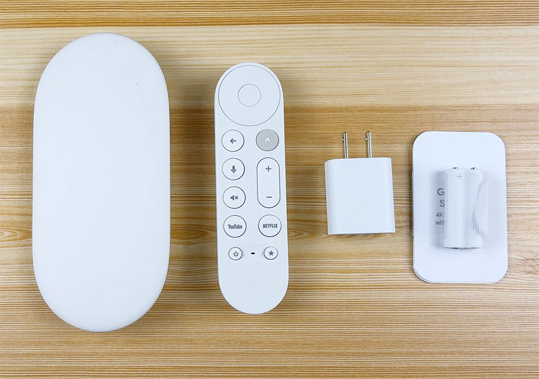
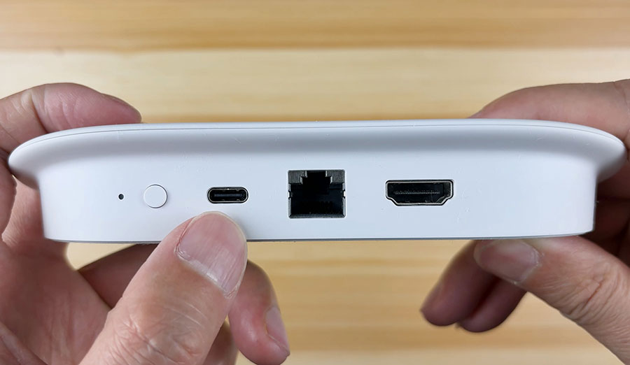
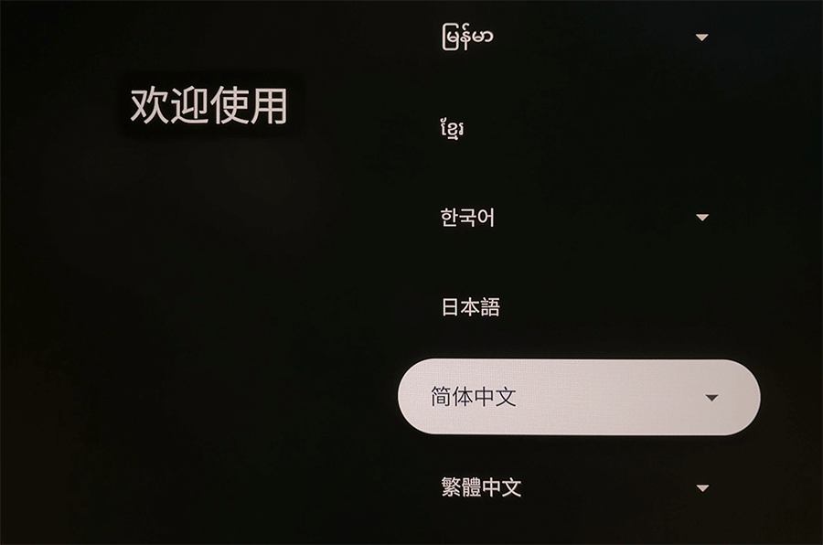
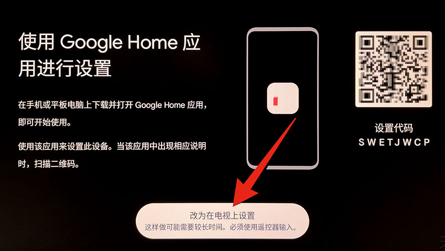
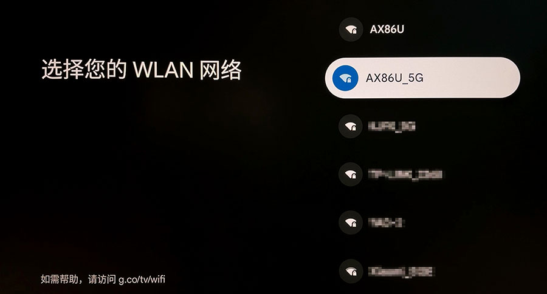
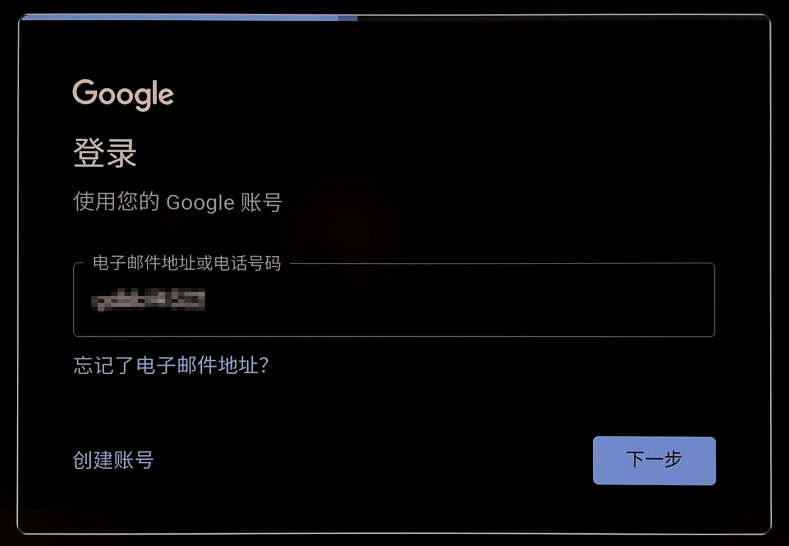
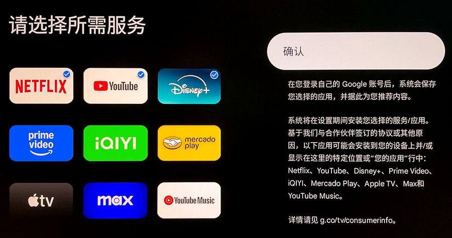
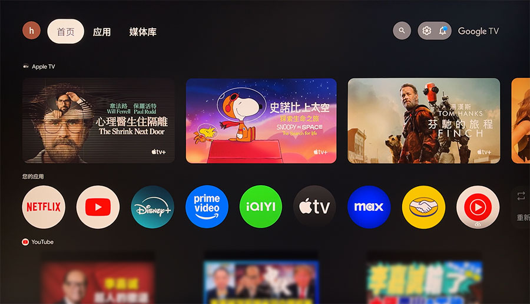
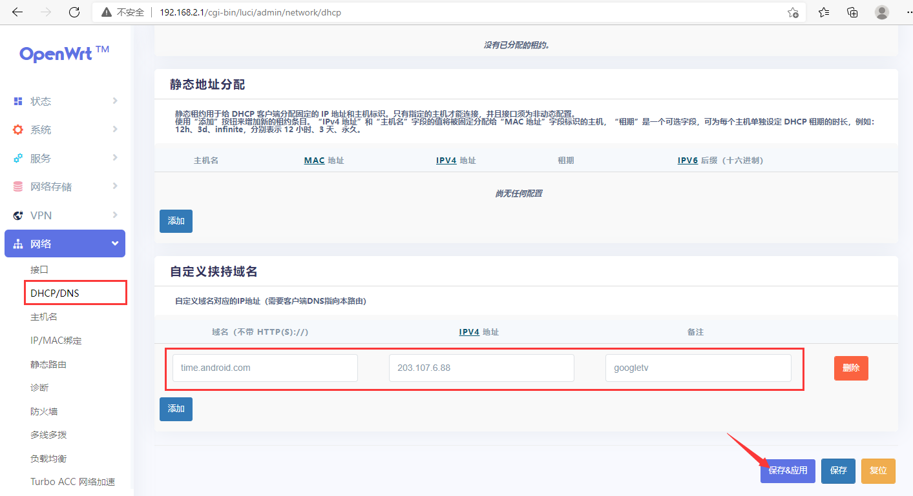

Google TV Streamer 4K 2024款 中国大陆使用教程，包括开箱，激活等。
  
选择语言：

通过电视上设置：

选择一个支持科学上网的WiFi：

登录 Google 账号：

选择需要安装的应用：

Google TV 已经激活完成：

常见问题：

如果 Google TV 连接WiFi失败，建议使用支持科学上网的网络。
1、需要科学上网的WiFi（建议使用OpenWrt软路由）
2、在软路由OpenWrt后台设置：网络 - DHCP/DNS - host和解析文件拉到最下边 - 自定义挟持域名
在这里添加 域名：time.android.com IP：203.107.6.88
保存&应用，再重新连接WiFi